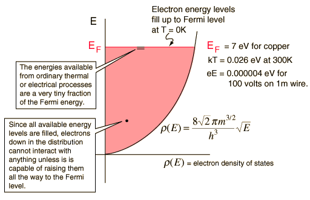
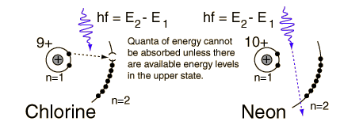

Ripples on the Fermi Sea
The Fermi energy is the maximum energy occupied by an electron at 0K. By the Pauli exclusion principle, we know that the electrons will fill all available energy levels, and the top of that "Fermi sea" of electrons is called the Fermi energy or Fermi level. One of the remarkable things about the Fermi energy is how large it is compared to the energies which electrons could gain by ordinary physical interactions with their environment.

The amount of energy available as a result of the temperature of the material is on the order of the average thermal energy, for which kT= .026 eV at 300K is a representative number. This is very small compared to the Fermi energy of 7 eV for copper. This tells us that that thermal energy can interact with only a tiny fraction of the electrons (roughly .026/7 or about 0.4% of the energy range), since the overwhelming majority of the electrons are separated from the top of the Fermi sea by much more than thermal energy. This correlates well with the observation that electrons do not contribute significantly to the specific heat of solids at ordinary temperatures. Only at very low temperatures does the electron specific heat become significant.
Since there is a vast sea of electrons, it may be easier to visualize the unavailability of final states with a simpler system - that of atomic electrons which must obey the Pauli exclusion principle. At left below in the example of a chlorine atom, energy could be received from photons which match the energy gap between n=1 and n=2 because there is an energy vacancy in the n=2 level. But for neon, even a photon which matches the energy E2-E1 precisely cannot be absorbed because all the available levels are filled.

The vast majority of the free electrons are likewise unavailable to the process of ordinary electrical conduction in wires for the same kind of reasons. When you apply a voltage to a copper wire, you establish an electric field in the wire which can do work on the electrons to give them energy. But the example of copper wire conduction shows that the mean free path of electrons in a copper wire at room temperature is in the neighborhood of 40 nm. So the energy given to an electron by the electric field by 100 volts applied to a 1 meter copper wire would be on the order of W=eEd = 100 volts x 40 nm = 0.000004 eV. Such an amount of energy cannot be absorbed by most of the electrons because there is no available energy level that close to them in energy.
|